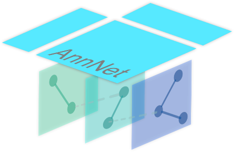
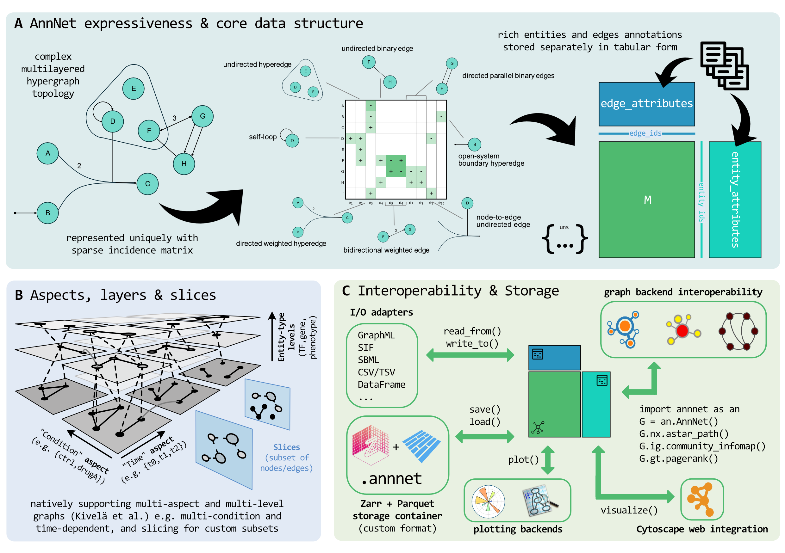

annnet
annnet (Annotated Network) is a high-expressivity data structure for networks. One container holds simple graphs, multilayer networks and hypergraphs, together with their annotations. It is designed for systems biology, network biology, omics integration, computational social science, and any domain that needs fully flexible graph semantics, with stable storage and interoperability.
Get started
1. Install
This installs annnet with the Polars tables, the NetworkX backend and the native
file format. The core package alone is pip install annnet. For all optional
extras, see Installation.
2. Try it
Build a small signaling network from a table, select the confident interactions, run a NetworkX algorithm on the same object, and save the result:
import annnet as an
import polars as pl
interactions = pl.DataFrame(
{
'source': ['EGFR', 'GRB2', 'SOS1', 'KRAS', 'BRAF', 'PTEN'],
'target': ['GRB2', 'SOS1', 'KRAS', 'BRAF', 'MAPK1', 'AKT1'],
'sign': [1, 1, 1, 1, 1, -1],
'confidence': [0.95, 0.9, 0.8, 0.9, 0.7, 0.85],
}
)
G = an.from_edge_frame(interactions, sign='sign', directed=True)
print(G.summary()) # 8 nodes, 6 edges
confident = G.view(edges=G.E.select(confidence__gte=0.85))
print(len(confident.N), len(confident.E)) # 7 nodes, 4 edges
scores = G.nx.betweenness_centrality(G)
G.attrs.update('nodes', {n: {'betweenness': v} for n, v in scores.items()})
G.write('signaling.annnet')
G2 = an.read('signaling.annnet')
The Quickstart goes through the same steps with a larger table, and explains views, annotations and the saved file.
3. Learn more
- Guide, five notebooks with concepts, mathematics and runnable code: graph model and matrices · annotations and views · slices · layers · computation and storage
- Examples, complete analyses: multi-condition causal signaling · TGF-beta fibrosis response, and integrations with OmniPath, Cytoscape, PyG and CORNETO
- API reference: exact signatures and options
- Community: how to contribute to the docs and the code
Main features

At the core is a sparse incidence-based representation that supports mixed graph types within the same object. Edges are first-class entities with stable identifiers, and graph type (directed, undirected, hyperedge) is a property of each edge rather than the container. Around this core, annnet organizes metadata as typed tables and exposes higher-level constructs such as slices and multilayer structure without duplicating the underlying graph.
-
One object for heterogeneous graphs
Represent simple graphs, digraphs, signed edges, hyperedges, self-loops, parallel edges, and edge-entity relations without switching data models.
See: hyperedges in the guide · edge as an endpoint · adding edges
-
Typed annotation tables
Store node, edge, slice, layer, and edge-slice metadata in indexed tabular structures instead of flat per-object dictionaries.
See: annotations in the guide · OmniPath table example · attributes
-
Named slices for conditions and views
Define condition-specific or context-specific graph views without copying the full topology, with optional per-slice edge-weight overrides.
-
Multilayer network support
Work with aspects, layer tuples, node-layer membership, intra-layer edges, inter-layer edges, and coupling structure as part of the core model.
See: layers in the guide · supra-adjacency · layers
-
All popular graph libraries, without conversion work
Run NetworkX, igraph, and graph-tool algorithms directly on an annnet graph through
G.nx,G.ig, andG.gt. annnet converts lazily and stays the canonical representation.See: backends in the guide · PyG example · backend accessors
-
Native, loss-aware storage
Persist topology, annotations, and metadata together in a format designed for round-trip fidelity and scalable IO.
See: storage in the guide · Cytoscape example · format comparison
Why annnet
Many real-world networks are structurally heterogeneous and context-dependent. A single dataset may combine directed and undirected interactions, signed edges, higher-order relations, and multiple contextual or temporal conditions. Standard graph libraries handle topology and algorithms well, but typically treat attributes as flat, per-object dictionaries without schema, indexing, or efficient bulk operations. This makes it difficult to manage annotations, compare conditions, or preserve structure across analysis steps.
annnet keeps graph topology, annotation tables, and graph views aligned in a single container. It does not replace the existing graph libraries: it makes the most popular ones (NetworkX, igraph, graph-tool) available on the same object, and exchanges data with formats and tools such as Cytoscape, GraphML, SBML, and PyTorch Geometric. You keep one consistent data model and still use the established tooling.
The design follows the matrix-plus-annotation pattern of omics containers such as AnnData, and adapts it to graphs with heterogeneous topology. annnet is most useful where graph structure is only one part of the data model, and where annotations, conditions, or multiple representations must be handled explicitly:
-
Systems biology and omics integration
Model regulatory, signaling, metabolic, and cross-modal networks with typed metadata and multiple analysis contexts.
-
Condition-specific and temporal networks
Keep one shared graph with named slices for perturbations, time points, cohorts, or filtered analytical views.
-
Multimodal and layered data
Represent networks across modalities, resolutions, or time as explicit multilayer objects rather than ad hoc conventions.
-
Exchange with existing tooling
Move between annnet and standard graph ecosystems, file formats, and ML pipelines without flattening the original structure too early.
annnet is part of sysbioverse, an ecosystem of free open source packages for molecular systems biology. The packages share data structures, design principles and workflows, and build on the scverse ecosystem for single-cell omics analysis.